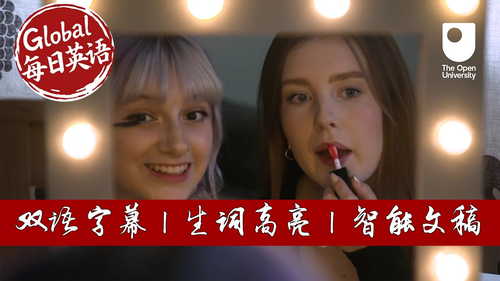

【BBC科普精选：你也有过敏吗？】
Summary: Living with severe allergies is a constant battle between life and death, often misunderstood by others. Individuals face social isolation and anxiety, especially in situations involving food and intimacy. Proper education and support from loved ones can make a significant difference in managing these conditions. Many have to develop rigorous routines to create safe environments. Despite the challenges, people are learning to take control and not let allergies define their lives. The journey requires perseverance but proves that one can still live fully.
摘要： 严重过敏患者生活在生死边缘，却常被他人误解为小题大做。过敏带来的不仅是身体威胁，更伴随着社交焦虑和亲密关系挑战。亲友的主动学习和微小帮助能极大改善患者的生活质量。许多患者不得不建立严格的净化仪式来打造安全空间。尽管需要终身保持警惕，但通过自我教育和经验积累，患者依然能够掌握主导权。这段艰难旅程塑造了更坚韧的性格，证明生命不会被过敏定义。

⏱️ Estimated Reading Time: 7 min.
📚 四级生词 📚 六级生词 📚 雅思生词 📚 托福生词 📚 专八生词 📚 SAT生词 📚 考研生词 📚 GRE生词
It does frustrate me quite a lot that people don't know much about allergies because you get a lot of people that think it's a joke or something.
It shouldn't define you and I don't let it define me, but it is a matter of life and death.
The whole big allergy is sigh.
Like it's such a ball, there'll be more of a hindrance to me than it'll ever be to you.
So I was always terrified of kissing.
I said to my first kiss until I was 18.
I remember seeing it on the news, which is girl at university who would kiss to her boyfriend.
She was dating at the time.
I mean, he had a snicker spot and she passed away from that.
And I was always terrified.
I was like, you know, what a day is wrong with that day.
What a day is wrong with that day.
What are they eating that day?
The first day I met my boyfriend, I spoke about my allergies.
From that point onwards, he very well-inly educated himself.
He's made it a part of our relationship that's not an issue.
It's just how we work.
If you've got someone who's you love who has an allergy, do the little things, you know, see how you can help them.
And that makes a really big difference.
Allegies that put her life in danger.
An ingredient which caused an allergic response.
He had an anaphylactic reaction.
Sesame wasn't listed on the ingredients.
He told staff about his derealogy.
He ordered something that killed him.
I have a life-threatening, severe nostology.
I'm also allergic to kiwi, grapefruit, prawns, pink peppercorns and coconuts.
So I just moved into my first flat.
See, I'm decontaminating it.
I've got my own little ritual to make it so.
First, we did feel quite lonely.
But then it's also nice to have that place that's your own allergy-free zone.
I'm a second year media production student at the University of Lincoln.
I could go into anaphylactic from having milk or nuts.
So the seriousness is very high and also it only takes a little bit of it.
Food is such a big part of socialising at any age.
When I came to university, it was so nice to talk freely with people my own age about how I was feeling.
It sort of gave me a new perspective on what friendships meant to be.
I'm a 16 year old ski racer and I race for the team GB Children's team.
I've got an allergy.
It's quite a severe one for that.
So, what are you guys going to get?
Yeah, probably just a sandwich, a piece of it.
Yeah, I probably need to go check what I've got and all the ingredients and stuff.
You've got more just responsibilities.
You need to make sure what you're eating is the right thing.
However, exhausting this constant vigilance is.
It is entirely necessary.
I start educating myself more and more and more.
Because that's how I'd feel safest.
Before I came to university, I was researching the hell out of alcohol and alcohol in brands trying to figure out what would be the safe option for me.
I like to get bottled, the air's also added.
Do you like jinking in a place like this, which is like a pub instead of a bar?
Yeah, some bars.
They mainly do cocktails, jins, like I can't really have.
The first time you go out on your own, it is quite scary.
A will-take a bag with me that will have my equipment and periton in it just for the case that something did happen.
If I ever did sort of go into anaphylactic shop, what you'd do is you'd use this thing that's called an Epipan.
Remember you tell me that it was blue to the sky, orange to the sky, and I know that you'd prefer it on your right side if possible.
Allegies aren't just a singular thing.
It comes with the anxiety, the high and low mood, the sort of isolation.
I find it quite motivating that you can just do all this stuff.
It shows that nothing can stop you.
Yeah, that can allergy doesn't have to hold you back and define as a person.
You can still live life.
It's maybe very thick skinned and very persevering.
13th, 14th, or with me would have shaken going into a restaurant with my parents.
They were always like, you have to see your allergies, you have to communicate so we won't always be here to do that.
And that really helps me.
Because of the education I put myself through, and the experiences I've had, I feel way more confident, when we're independent.
And that's really shaped me into looking at my allergies differently.
They don't own me, I own them.